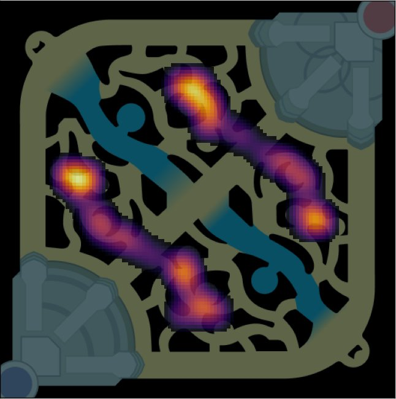

App de escritorio · Código abiertoDesktop app · Open source
Jungle Clear Tracker
Mide automáticamente el primer clear de jungla en League of Legends: cuándo muere cada campamento, el orden, los scuttles y un mapa de los primeros 7 minutos, solo con las APIs locales del juego. Automatically measures the first jungle clear in League of Legends: when each camp dies, the order, scuttles and a map of the first 7 minutes, using only the game's local APIs.
- Captura en directo del oro: cada monstruo es un salto, así que los tiempos tienen ~0,5 s de precisión.Live gold capture: every monster kill is a jump, so timings are accurate to ~0.5 s.
- Tras la partida automatiza el replay con una cámara cenital y proyección geométrica para reconstruir la posición de los 10 campeones (error mediano ~45 unidades frente al timeline de Riot).After the game it drives the replay with a top-down camera and geometric projection to rebuild all 10 champions' positions (median error ~45 units vs Riot's timeline).
- Mapas de calor, rutas y winrate por ruta; segundo plano, arranque con Windows y exe con asistente de configuración.Heatmaps, routes and win rate by route; runs in the background, starts with Windows, single exe with a setup wizard.
- Python
- Tkinter
- matplotlib
- REST APIs
- PyInstaller